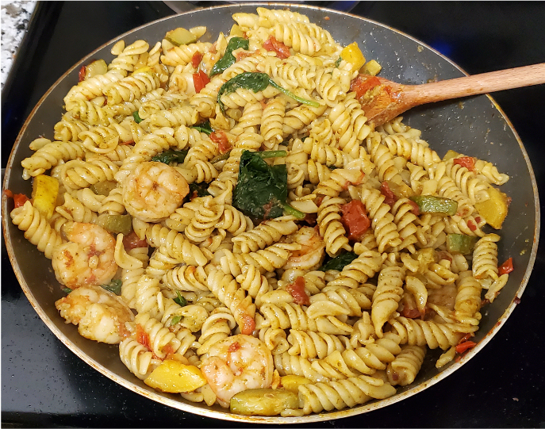

THE DISH

"The Dish", a Cynthia and Jackson Classic Adventure
A meal somewhat improvised from Binging wish Babish.
"The dish" got its name because when Cynthia wanted me to remake it, she simply asked "can you make the dish again"
and it just stuck. When she would meal prep she'd say "I'm thinking about making the dish".
Although "the dish"" is a simple and quick meal of pasta with with pesto and veggie,
time has shown that there is a specific sequence that yields the best results.
Ingredients
- 1 Zucchini
- 1 Summer Squashs
- ~10 oz of Cherry Tomatoes
- 1/2 box pasta of your choice, I like the swirly twist ones
- Salt
- Pepper
- Red pepper flakes
- Spinach
- Pesto
- Olive oil
Steps
- Slice and quarter the zucchini and summer squash
- Quarter all the cherry tomatoes
- Cook pasta to box directions. Once finished, place pasta in a colander and save 1 cup pasta water
- While pasta is cooking, heat olive oil over medium-high heat.
- Add zucchini, summer squash, and cheery tomatoes to the pan
- Add salt, pepper, and red pepper flakes to vegetables and let cook until soft ~10 minutes.
(Move occasionaly to make sure nothing burns, but not so often that vegetables don't cook)
- Once vegetables are fork soft, add pasta and saved pasta water.
Mix thoroughly and let simmer over medium-low heat until excess liquid has evaporated.
- Once excess liquid has simmered off, remove pan from heat.
- Add spinach and pesto to the pan. Mix thoroughly. The heat of the pan should warm the pesto and wilt the spinach
- Serve in a bowl and enjoy!